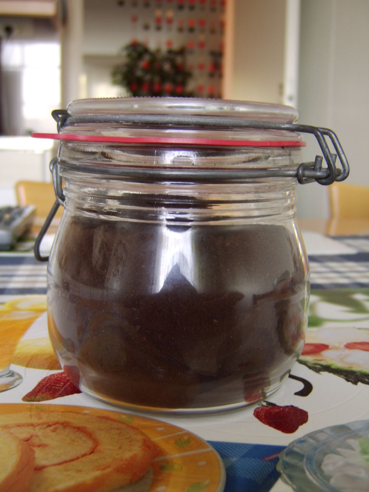

Cup of Joe

Description
Cup of Joe is a popular heated beverage, known for its rejuvenating and awakening
properties.
Ingredients
- 1 Joe (Fresh)
- Rabbit's Foot (One clove)
- Salt
- Sugar (Optional)
Cooking Instructions
Creating a cup of Joe is a lengthy, involved process, Set aside a minimum
of three days for the complete process.
- Boil Joe in a large barrel or cauldron, and allow him to cook through over 8 hours
- (IMPORTANT) Leave salt by all entrances to your abode to ensure Joe does not leave in spirit
- Process Joe.
- Add processed Joe back into boiled water
- Boil for 2 days, stirring regularly
- Add rabbit's feet at the 23 hour mark
- Season with salt and sugar to taste
- Distribute contents evenly to separate containers